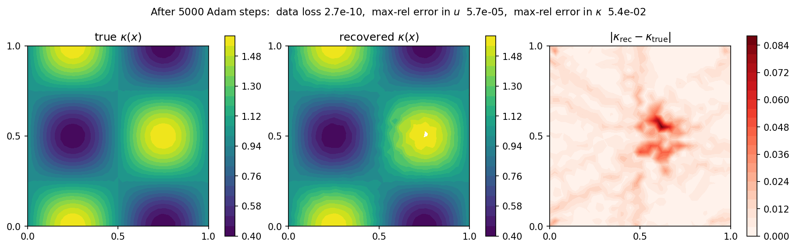

可微性¶
Mesh → Assembler → SparseMatrix → Condenser → Solve 流水线上的每一个组件，要么是 torch.nn.Module，要么是自定义的 torch.autograd.Function，而末端的线性求解具备解析的伴随反向传播。其结果是：在有限元解上计算出的损失，可以一路反向传播到任何接触过流水线的对象：每个节点上的系数、某个狄利克雷取值，或是参数化材料系数场的神经网络——而无需手写一行灵敏度代码。
本章讲解梯度流是如何工作的，用两个实战示例（参数辨识与基于密度的拓扑优化）加以演示，并列出其开销、正确性，以及目前尚不可微的少数情形。
工作原理¶
TensorMesh 有三个部件接入了 autograd 计算图：
Mesh继承自torch.nn.Module。它的points与逐节点字段都是可以携带requires_grad=True的张量。用mesh.to(device)搬移网格、用state_dict保存网格，都会如你所料地工作。ElementAssembler和NodeAssembler本身就是nn.Module。任何流入forward(...)被积函数的张量，都会成为装配出的矩阵或向量的计算图输入。tensormesh.sparse.SparseMatrix.solve()原封不动地继承自torch_sla.SparseTensor（见 稀疏求解器），因此伴随逻辑位于torch-sla中而非 TensorMesh 内。前向求解由 \(A\,u = b\) 得到 \(u\)。对于标量损失 \(L(u)\)，反向模式 autograd 会将上游梯度 \(\partial L/\partial u\) 交给该求解；它并不穿过求解器的内部进行求导，而是把求解封装进一个torch.autograd.Function，其自定义的backward求解单个伴随系统以得到伴随变量 \(\boldsymbol{\lambda}\)，\[A^{T}\, \boldsymbol{\lambda} \;=\; \frac{\partial L}{\partial u},\]随后以闭式形式装配出输入梯度——对每个非零矩阵元 \(\partial L / \partial A_{ij} = -\lambda_i\, u_j\)，对右端项 \(\partial L / \partial b = \boldsymbol{\lambda}\)。
因此，先调用 loss = criterion(K.solve(b), target).sum() 再调用 loss.backward()，便能为所有流入 K、b 或损失的叶子张量给出正确梯度——矩阵元、源项、给定的边界取值，以及任何上游参数（神经网络权重、设计变量等）。
伴随方法的开销¶
穿过一次线性求解的反向传播，只需付出一次额外的稀疏求解（针对转置系统）。对于 SPD 问题 \(A^T = A\)，因此反向传播使用与前向相同的分解或预条件子模式。由此，在基于梯度的优化器中，每次迭代的总开销大约为 2 × forward_solve_cost，与你有多少自由度、装配逻辑多么复杂无关。
正确性校验：autograd 对比有限差分¶
在把 autograd 用于正经的反问题之前，值得拿中心有限差分对它做一次抽查。生成本页各图的脚本中包含了一个在 35 节点网格上的小型校验；运行它会打印出
[grad check] vs finite differences...
node autograd fd |diff|
32 -8.297026e-03 -8.297026e-03 8.05e-12
15 -5.268205e-04 -5.268205e-04 2.31e-12
37 -4.118132e-03 -4.118132e-03 1.04e-12
即大约 11 位有效数字的吻合，这正是 float64 伴随方法应当达到的水平。那点微小的残差是有限差分的截断误差，而非 autograd 的缺陷。
什么可微，什么不可微¶
目前可穿过 ``solve`` 求导的对象：
矩阵元（
edata）——梯度会落到提供各非零值的那个上游张量上。右端项
b。传给装配器的
point_data/element_data/scalar_data中的任何张量——梯度会穿过被积函数流动。狄利克雷取值（通过凝聚后对右端项的贡献）。
后端方面的注意事项：
torch-sla的backend="pytorch"和backend="auto"路径是对 autograd 最稳妥的默认选择。它们将前向路由到纯 PyTorch 的迭代求解器，反向则使用解析伴随。SciPy / Eigen / cuDSS / CuPy 后端都被同一个自定义
torch.autograd.Function包装，因此梯度依然能够流动——但前向计算发生在 NumPy / CuPy / C++ 中，并在那一段从计算图上脱离。这对线性求解而言是正确的，但意味着你无法从 autograd “看进”求解器内部。tensormesh.sparse中的遗留回退路径（在未安装torch-sla时使用）实现了同样的、带伴随反向传播的自定义autograd.Function，所以在那里梯度同样有效。
在涉及自动微分的研究工作流中拿不准时，请安装 torch-sla 并坚持使用 backend="auto"。
实战示例 1：系数场辨识¶
假设我们观测到一个“真值”泊松解，并希望通过梯度下降，在每个网格节点上恢复未知的系数场 \(\kappa(x)\)：
前向映射是“给定 \(\kappa\) 后做有限元求解”；损失是有限元解与观测之间的 L² 距离；autograd 提供梯度，Adam 更新 \(\kappa\)。我们将其参数化为 \(\kappa = 1 + \tanh\theta\)，从而让 \(\kappa\) 保持在 \((0, 2)\) 内——严格为正，因此有限元矩阵在每次迭代都是 SPD——而 \(\theta\) 无约束。
import torch
from tensormesh import Mesh, ElementAssembler, NodeAssembler, Condenser
device = "cuda" if torch.cuda.is_available() else "cpu"
mesh = Mesh.gen_rectangle(chara_length=0.04).to(device)
cond = Condenser(mesh.boundary_mask)
class WeightedLaplace(ElementAssembler):
def forward(self, gradu, gradv, kappa):
return kappa * (gradu @ gradv)
class Source(NodeAssembler):
def forward(self, v, f):
return v * f
def fem_solve(kappa, f_vals):
K = WeightedLaplace.from_mesh(mesh)(point_data={"kappa": kappa}).double()
b = Source.from_mesh(mesh)(point_data={"f": f_vals}).double()
K_, b_ = cond(K, b)
return cond.recover(K_.solve(b_))
# Synthetic ground-truth data.
pts = mesh.points
x, y = pts[:, 0], pts[:, 1]
kappa_true = 1.0 + 0.6 * torch.sin(2 * torch.pi * x) * torch.cos(2 * torch.pi * y)
f_vals = torch.ones(mesh.n_points, dtype=torch.float64, device=device)
with torch.no_grad():
u_obs = fem_solve(kappa_true, f_vals)
# Recover kappa from u_obs by Adam.
theta = torch.zeros(mesh.n_points, dtype=torch.float64,
device=device, requires_grad=True)
optim = torch.optim.Adam([theta], lr=3e-2)
for step in range(5000):
optim.zero_grad()
kappa = 1.0 + torch.tanh(theta)
u = fem_solve(kappa, f_vals)
loss = ((u - u_obs) ** 2).sum()
loss.backward()
optim.step()
在 5000 次迭代中，数据损失下降了七个数量级以上，最大范数下的观测误差最终降至约 \(6 \times 10^{-5}\)：

图 16 5000 步的 Adam 优化历程：数据损失 \(\|u_\theta - u_{\rm obs}\|_2^2\) 从 \(10^{-2}\) 降至 \(\sim 3 \times 10^{-10}\)（周期性的尖峰是 Adam 的过冲，几步之内即可恢复），\(u\) 的相对最大范数误差达到 \(\sim 6 \times 10^{-5}\)。¶
恢复出的系数场：
{kind=link}

图 17 真值 \(\kappa(x)\)（左），经 5000 步 Adam 后恢复的场（中），以及绝对误差（右）。如今四瓣棋盘格已在整个求解域上恢复出来；仅在中心残留一抹微弱的痕迹（那里绝对误差峰值约为 \(0.08\)，而在求解域其余部分低于 \(0.01\)），该处的解梯度很小。¶
唯一可见的残差是中心处一团微弱的色斑。在那里常数源使 \(\nabla u\) 消失，因此通量 \(\kappa\,\nabla u\) 几乎不携带任何关于 \(\kappa\) 的信息，该区域恢复得最慢——对 \(\theta\) 施加一个光滑性惩罚即可消除它，留作练习。
整个梯度计算经由 WeightedLaplace 装配器，并通过伴随反向传播穿过线性求解——你从不需要手写一条灵敏度方程。
实战示例 2：热柔度拓扑优化¶
对于基于密度的拓扑优化（体积约束下的柔度最小化），TensorMesh 自带一个专用的 OCOptimizer，实现了经典的最优性准则更新。这里我们将其应用于 \([0,1]^2\) 上的一个热问题：中心有一个高斯热源，边界处为冷汇，每个单元的密度 \(\rho \in [0,1]\)，SIMP 导热率 \(\kappa(\rho) = \kappa_{\min} + (1 - \kappa_{\min})\,\rho^{p}\)，以及一个硬性体积上限 \(\bar{\rho} \leq V = 0.4\)。
import torch
from tensormesh import Mesh, ElementAssembler, NodeAssembler, Condenser
from tensormesh.optimizer import OCOptimizer
mesh = Mesh.gen_rectangle(chara_length=0.025).to(device)
cond = Condenser(mesh.boundary_mask)
elements = mesh.cells["triangle"]
n_elem = elements.shape[0]
class SIMPLaplace(ElementAssembler):
def forward(self, gradu, gradv, kappa):
return kappa * (gradu @ gradv)
class Source(NodeAssembler):
def forward(self, v, f):
return v * f
# Localised heat source.
x, y = mesh.points[:, 0], mesh.points[:, 1]
sigma = 0.08
f_field = torch.exp(-((x - 0.5) ** 2 + (y - 0.5) ** 2) / (2 * sigma ** 2))
V, p_simp, kmin = 0.4, 3.0, 1e-3
rho = torch.full((n_elem,), V, dtype=torch.float64,
device=device, requires_grad=True)
optim = OCOptimizer(rho, vf=V, move_limit=0.15)
def fem_solve(rho):
kappa = kmin + (1.0 - kmin) * rho ** p_simp
K = SIMPLaplace.from_mesh(mesh)(element_data={"kappa": kappa}).double()
b = Source.from_mesh(mesh)(point_data={"f": f_field}).double()
K_, b_ = cond(K, b)
return cond.recover(K_.solve(b_)), b
for step in range(60):
optim.zero_grad()
u, b = fem_solve(rho)
compliance = (b * u).sum() # J = b^T u
compliance.backward() # autograd populates rho.grad
optim.step() # OC update + bisection
柔度从 \(5.9 \times 10^{-3}\)（均匀灰板）降至 \(6.9 \times 10^{-4}\)——几乎一个数量级——同时体积约束 \(\bar{\rho} = 0.4\) 全程被精确保持。最优布局是一个“热十字”，把中心的热源与四条边中点处的冷汇连接起来：

图 18 60 步最优性准则迭代中的密度演化。第 0 次迭代是均匀的 \(\rho = V = 0.4\) 起点；到第 5 次迭代十字形状已经显现；第 59 次迭代是收敛后的设计。柔度下降了约 \(\sim 8.6\times\)；体积分数被精确保持在 \(0.4\)。¶
最优性准则步使用刚刚由 autograd 计算出的梯度——tensormesh.optimizer.OCOptimizer.step() 读取 rho.grad，通过二分法求出拉格朗日乘子，并在移动限制下施加密度更新。没有有限差分，也没有手写的伴随。
接入神经网络¶
三种模式涵盖了常见的机器学习/偏微分方程耦合：
神经网络预测系数场。 神经网络吃进坐标（或由其派生的特征），输出一个逐节点的值——通过
point_data={"kappa": nn_out}把输出喂给装配器。梯度会从有限元损失反向流过神经网络。神经网络预测边界取值。 把输出作为
dirichlet_value传给一个新建的Condenser。凝聚对右端项的贡献使梯度保持连通。神经网络预测逐单元的刚度调节因子。 把输出堆叠成一个逐单元的张量，通过
element_data={"alpha": nn_out}传入；让装配器的forward在被积函数内部使用它。
在这三种模式中，神经网络都是一个普通的 nn.Module，有限元流水线则是一串普通的 nn.Module 调用；标准的 torch.optim 优化器无需任何特殊 hook 即可工作。
备注
接入网络无需任何 TensorMesh 专属的神经网络层——如上所示，一个普通的 torch.nn.Module 就够了。目前 tensormesh.nn 只提供容器工具 BufferDict 和 BufferList（在内部用于把张量注册为模块 buffer），并不包含可学习的层。更高层的神经算子与可学习偏微分方程构件已列入未来版本的计划；在那之前，请用普通的 torch.nn 层来搭建网络侧。
复现这些图¶
上面两个示例，连同那个有限差分梯度校验，都由同一个脚本生成：
python docs/scripts/differentiability_figures.py
它仅使用公开 API。如今 5000 步的辨识循环占据了大部分运行时间——无论如何都要几分钟（GPU 上约 3 分钟）——之后它会把 param_id_loss.png、param_id_fields.png 和 topology_thermal.png 写入 docs/source/_static/user_guide/differentiability/。
下一步¶
稀疏求解器 ——
SparseMatrix.solve背后那个感知 autograd 的求解器。批量化工作流 —— 在批量流水线中进行反向传播，用于机器学习训练数据生成。
时间积分 —— 瞬态伴随同样有效，每个时间步做一次伴随求解。
API Reference ——
solveautograd 函数以及OCOptimizer的参考文档。